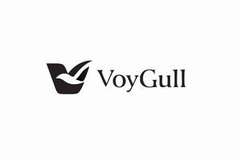

Trade Mark Journal No.2026/009 27 February 2026
UK00004340002 12 February 2026 (41)
Mark 1
Mark 2

- Class 41
- Book publishing; Book and review publishing; Book rental; Book loaning; Book lending; Publication of books; Books (Publication of -); Electronic book reader rental; Publication of text books; Rental of electronic book readers; Publication of books, reviews; Publication of lyrics of songs in book form; Publishing of books; Publishing of books and reviews; Publication of audio books; Publication of music books; Publication of year books; Services for the publication of guide books; Publication of educational books; Publishing of instructional books; Rental of books; Services for the publication of books; Book club services providing information relating to books; Providing online non-downloadable comic books and graphic novels; Publishing of books, magazines; Hire of books; Online publication of electronic books and journals; Publication of electronic books and journals online; Loan of books; Multimedia publishing of books; Providing online comic books, not downloadable; Publication of journals; Publishing of journals; Publication of scientific information journals; On-line publication of electronic books and journals; Publication of electronic books and journals on-line; Publication of books, magazines, almanacs and journals; Multimedia publishing of journals; On-line publication of electronic books and journals (non-downloadable); Publishing of journals, books and handbooks in the field of medicine; Publishing of electronic books and journals online; Newspaper publication; Publishing of electronic books and journals on-line; On-line publication of electronic books and journals [not downloadable]; Multimedia publishing of magazines, journals and newspapers; Publication of periodicals; Publishing of scientific papers; Publication of magazines; Magazines (Publication of -); Publication of electronic magazines; Publication of newspapers; Publication of calendars; Electronic online publication of periodicals and books; Magazine publishing; Electronic publication; Publication of periodicals and books in electronic form; Publication of printed directories; Publication of textbooks; Publication of instructional literature; Newspaper publishing; Publishing of medical publications; Online publication of electronic newspapers; Publishing of electronic publications; Publication of printed matter and printed publications; Publication of booklets; Publication of music; Publication of photographs; Publication of texts; Publication of electronic books and periodicals on the Internet; Publication of medical texts; Publication of catalogs; Online electronic publishing of books and periodicals; Publication and editing of printed matter; Publication of sheet music; Publication of catalogues; Issue of publications; Publication of posters; Publication of consumer magazines; Publication of printed matter; Publication of manuals; Multimedia publishing of electronic publications; Publishing services for periodical and non-periodical publications, other than publicity texts; Publication of calendars of events; Publication of fact sheets; Publication of newspapers, periodicals, catalogs and brochures; Publication of prospectuses; Publishing scientific papers in relation to medical technology; Publishing of scientific papers in relation to medical technology; Publication of brochures; Publication of educational texts; Publication of directories relating to travel; Publishing of newspapers; Publishing of web magazines; Publication of online reviews in the field of entertainment; Publication of educational printed matter; Services for the publication of magazines; Publishing; Publishing of documents; Publishing of stories; Publishing of newsletters; Publishing of reviews; Publishing, reporting, and writing of texts; Publishing of printed matter; Publication of printed matter, other than publicity texts; Writing and publishing of texts, other than publicity texts; Publication of leaflets; Publication of texts in the form of CD-ROMs; Publication of printed matter, other than publicity texts, in electronic form; Publishing services for books; Publishing services for books and magazines; Multimedia publishing of printed matter; Multimedia publishing of newspapers; Publishing of scripts for theatrical use; Publication of books relating to information technology; Electronic publication of texts and printed matter, other than publicity texts, on the Internet; Publishing a newspaper for customers on the Internet; Services for the publication of newsletters; Publication services; Publication of texts, other than publicity texts; Texts (Publication of -), other than publicity texts; Publication of multimedia material online; Publishing of magazines in electronic form on the Internet; Song publishing; Multimedia publishing of magazines; On-line publishing services; Publication of printed matter in electronic form on the Internet; Preparation of texts for publication; Consultation services relating to the publication of books; Consultation services relating to the publication of written texts; Electronic publishing; Services for the publication of maps; Publication of printed matter in electronic form; Publication of books relating to entertainment; Providing on-line electronic publication [not downloadable]; Publishing of educational material; Publication of printed matter relating to education; Publishing of printed matter relating to french wines; Multimedia publishing; Publishing services; Consultation services relating to the publication of magazines; Publication of the editorial content of sites accessible via a global computer network; Publication of texts in the form of electronic media.
VOYGULL PUBLISHING CENTRE LTD